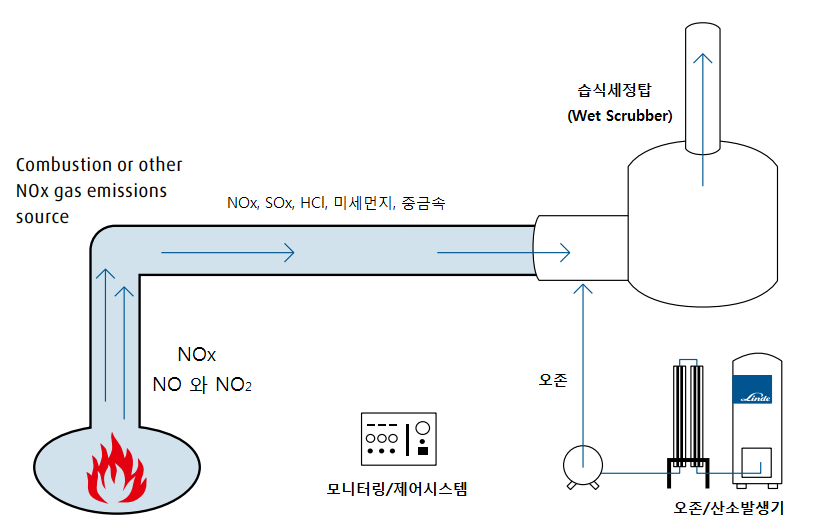

B
8, 11. 무시하시고 아래와 같이 합시다.

응답전에는 색이 채워진 별 5개가 보이고... (누르지 않았을 때 5점 처리를 하려고 합니다)
테두리는 검은색에서 노란색으로 바꾸어 주십시오.

14,
무시하십시오. 이미 그렇게 되었는데... 잘 몰라서 그런겁니다.
22, 23,
무시하십시오. - 다른 쪽 개발자가 보고잇습니다.
27, 강사 30명

30 모바일에는 앞으로(이전 메뉴) 가 있습니다. 미리보기에도 만들어 달라는 이야기입니다.

40 . 앞에 이야기한 31번 만족도 분기로 해결됩니다.
43, ? 글쎄요 나도 뭔지 알아보겠습니다.
45,
52,
60